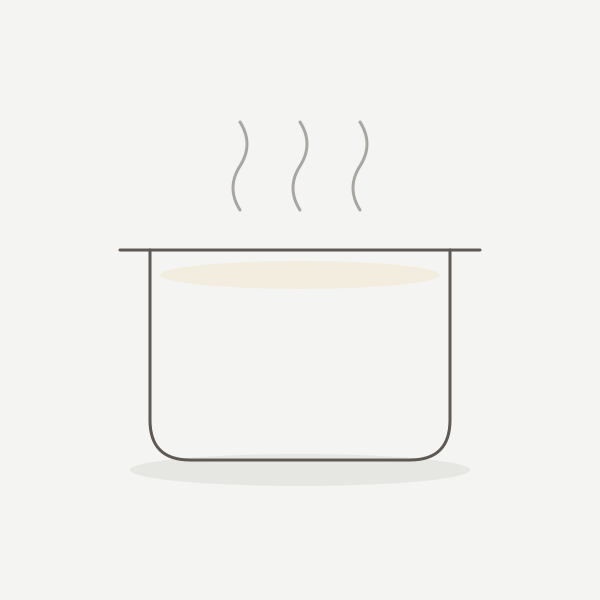
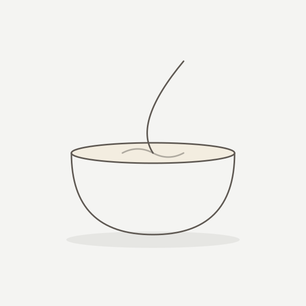
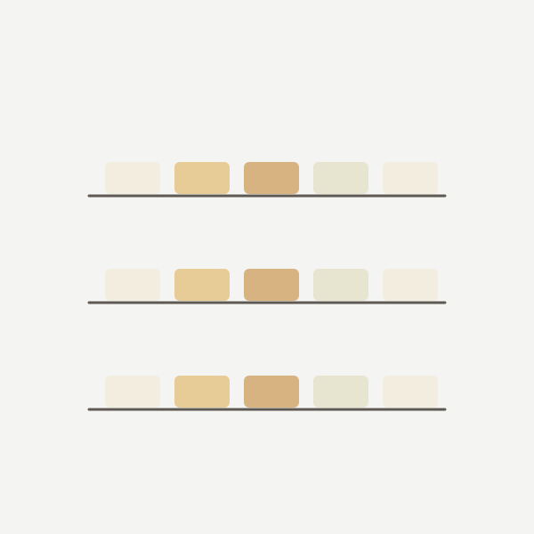

L’atelier
Des cuvées de 25 pains, coulés, découpés et pesés à la main en Haute-Savoie, puis laissés au repos le temps qu’il faut.
-

I
Fonte
Le suif, qui nous vient de la ferme de Clemensaigne, à Longessaigne, est fondu avec de l’eau, puis filtré, jusqu’à devenir une matière blanche, neutre et stable. C’est cette purification qui rend le savon inodore : il ne garde aucune note animale.
-

II
Saponification à froid
Le suif, et selon les pains une huile d’appoint, est mêlé à la solution de soude sans cuisson. La réaction transforme les corps gras en savon et produit de la glycérine, qui reste dans le pain au lieu d’en être extraite.
-
III
Moulage
La pâte est coulée en moule et laissée à prendre, puis découpée et pesée pain par pain. Une cuvée donne 25 pains, pas davantage.
-

IV
Affinage
10 semaines au minimum, à l’air libre. Le pain perd son eau, se durcit et gagne en douceur à mesure qu’il vieillit. C’est l’étape la plus longue, et celle qu’on ne peut pas abréger.
Pourquoi de si petites cuvées
Vingt-cinq pains, c’est ce que l’on peut couler, découper et surveiller avec soin en une seule fois. Lorsqu’une cuvée est épuisée, la suivante n’est mise en vente qu’au terme de son affinage : c’est un délai que nous préférons annoncer plutôt qu’abréger.
Le nom
L’estive, c’est le pâturage d’altitude où montent les troupeaux l’été, quand l’herbe des vallées ne suffit plus. Les bêtes y passent la belle saison, à l’herbe, sous la garde de quelqu’un.
Le nom rappelle d’où vient la matière de nos savons, l’élevage, et le pays où ils sont faits.
Découvrir la gamme